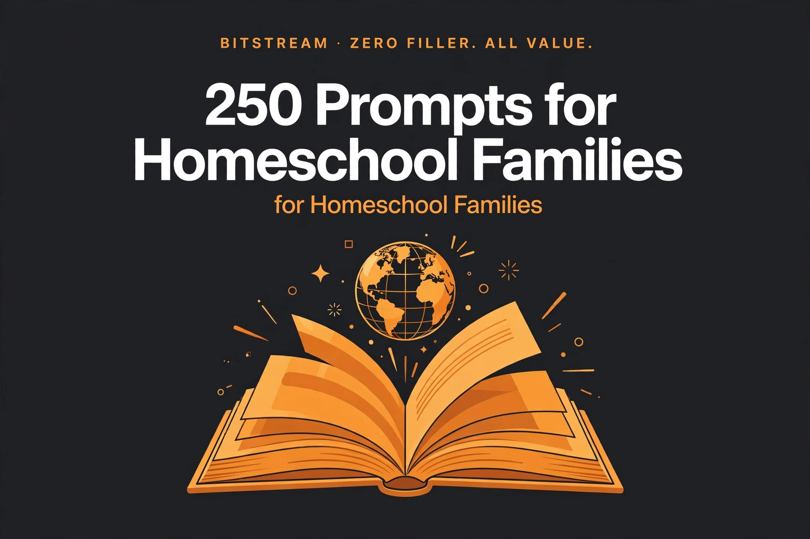

BITSTREAM · ZERO FILLER. ALL VALUE.
250 Prompts for
Homeschool Families
250 copy-paste AI prompts for homeschool families.
Open a free AI tool, paste, fill in the blanks, done.
NICHE PACK · $10.99
How to use this pack (60 seconds)
- Open a free AI tool — ChatGPT (chatgpt.com), Claude (claude.ai), or Gemini (gemini.google.com). No paid plan needed.
- Copy any prompt and replace the [BRACKETED] parts with your family's details.
- Be specific. Ages, grades, your state, your kid's learning style — specifics in, quality out.
- Treat the first answer as a draft. Reply with "make it simpler," "add more examples," or "shorter week" until it's right.
- Talk instead of typing. Every one of these tools has a voice mode — ramble while you make lunch, let it turn the ramble into a lesson plan.
Rule 1 — You're the teacher AND the parent. Use these prompts to plan lessons, build units, and keep records — and let the AI do the heavy prep lifting.
Rule 2 — Verify state rules and facts. Homeschool laws change by state — always confirm requirements on your state's official education site. AI plans; official sources confirm.
Rule 3 — One week at a time. Don't try to AI the whole school year tonight. Pick one prompt. The unit study, the reading list, the field trip.
1 · Curriculum Planning & Year Maps
Map the whole year before you buy a single workbook - grade by grade, subject by subject.
PROMPT 001
Full-year curriculum map
Build a full-year curriculum map for [grade level] covering [math, language arts, science, history, and electives]. Show what we cover each month, and leave room for [holidays and a slower December].
PROMPT 002
Grade-level scope and sequence
What should a [3rd grader] know by the end of the year in [math, reading, writing, science, and history]? Give me a plain-English scope and sequence I can check our plan against.
PROMPT 003
Choosing a math program
Compare [Saxon, Math-U-See, Singapore Math, and Beast Academy] for a [visual learner in 4th grade] who [gets bored with drill pages]. Recommend one and say why, in plain parent language.
PROMPT 004
Secular vs. faith-based filter
I want a [faith-based / secular] [science] curriculum for [6th grade]. List 4 options that fit that worldview, with cost, format (textbook vs. online), and who each is best for.
PROMPT 005
Curriculum cost comparison
I have [$400] for the year for [2 kids, grades 2 and 5]. Compare a full boxed curriculum vs. building our own from free/cheap resources. Show me where the money goes in each option.
PROMPT 006
Weekly schedule template
Build a weekly homeschool schedule for [grades K and 3] that fits [3 focused hours per day, 4 days a week]. Include breaks, and keep [Friday] light for catch-up and fun.
PROMPT 007
Block scheduling plan
Design a block schedule for [a 7th grader]: [deep-dive science on Mondays/Wednesdays, history on Tuesdays/Thursdays]. Keep each block under [90 minutes] with a real break in between.
PROMPT 008
Loop scheduling for busy weeks
Create a loop schedule for [art, music, nature study, and foreign language] so we rotate through them on busy weeks instead of skipping them entirely. Explain how the loop works in 3 sentences.
PROMPT 009
Morning basket routine
Build a 30-minute morning basket routine for [ages 5, 8, and 11]: read-aloud, poetry, one discussion topic. Give me a 4-week rotation of topics around [American history].
PROMPT 010
Elective picker
My [9-year-old] loves [drawing and animals]. Suggest 5 elective ideas we can do at home for under [$50] total, with what we would actually do each week.
PROMPT 011
Deschooling plan
We just pulled our [2nd grader] out of public school. Give me a [3-week] deschooling plan: how to ease in, what NOT to do, and signs they are ready for a real routine.
PROMPT 012
Switching curriculum mid-year
Our [5th grade] [math] curriculum is not working because [it moves too fast]. Give me a transition plan: how to test where my kid really is, and how to start the new program without tears.
PROMPT 013
Multi-age teaching plan
I teach [grades 1, 4, and 7] together. Show me how to teach [history] to all three at once, with one shared lesson and different assignments per level.
PROMPT 014
Unit vs. textbook decision
Help me decide: textbook or unit studies for [4th grade science]? My kid [loves hands-on projects and hates worksheets]. Give me pros and cons and a recommendation.
PROMPT 015
State standards alignment check
Check my [3rd grade] plan against typical state standards for [my state]: [list my subjects and what I plan to cover]. Tell me what is covered, what is thin, and what is missing. (I will verify against my state's official site.)
PROMPT 016
Holiday and break calendar
Build a homeschool calendar for [2026-2027] with [180 school days], starting [after Labor Day], including [a 2-week winter break and a spring break in April]. Show start and end dates.
PROMPT 017
Catch-up plan after a break
We took [3 weeks] off for [travel]. Make a 2-week catch-up plan for [4th grade] that prioritizes [math and reading] and quietly drops what does not matter.
PROMPT 018
Summer learning light plan
Design a light summer plan for [a rising 5th grader]: [20 minutes a day, 3 days a week], focused on [keeping math facts and reading sharp]. Make it feel like summer, not school.
PROMPT 019
Back-to-homeschool reset week
Plan a first-week-back routine for [grades 3 and 6]: no heavy academics, just rebuilding habits, testing where they are, and getting excited. Day-by-day for 5 days.
PROMPT 020
Curriculum review roundup
Summarize honest parent-style reviews of [this curriculum: name it] for [2nd grade]: what parents love, what they complain about, and who it is NOT for. Cite where you found each point.
PROMPT 021
Pacing guide for the semester
We have [16 weeks] to finish [this textbook: name] with [a 6th grader]. Break it into a weekly pacing guide with built-in review weeks and a buffer week before the end.
PROMPT 022
What to skip (curriculum trim)
This [history] curriculum has [too much busywork]. Look at [paste the table of contents or weekly plan] and tell me what to skip, what to combine, and what is actually worth doing.
PROMPT 023
Charlotte Mason style conversion
Convert our [4th grade] week to a Charlotte Mason style: short lessons, living books, narration, nature study. Keep our current [math] program and rebuild everything else.
PROMPT 024
Classical education plan
Lay out a classical-education-style year for a [logic-stage (7th grade)] student: what the grammar/logic/rhetoric stages mean in practice, and a weekly schedule built around [great books and Latin].
PROMPT 025
Unschooling-with-structure rhythm
We lean toward unschooling but I need SOME structure for [ages 6 and 9]. Design a weekly rhythm with anchors (morning read-aloud, Friday field trip, weekly library run) and freedom in between.
2 · Unit Studies & Lesson Plans
Turn any topic into a full learning adventure - outlines, daily plans, and hands-on projects included.
PROMPT 026
Unit study outline
Build a [4-week] unit study on [Ancient Egypt] for [4th grade]: weekly themes, 3 activities per week, one field-trip-style outing, and a final project. Keep supply costs under [$30].
PROMPT 027
Theme-based week
Plan a one-week ocean theme for [ages 5 and 8]: one book, one art project, one science activity, one math game, and one cooking activity per day. Keep each day under [2 hours].
PROMPT 028
Lesson plan for one week
Write a full week of lesson plans for [3rd grade] covering [fractions, the water cycle, and state history]. Daily objectives, materials, and one hands-on activity per subject.
PROMPT 029
Daily lesson plan template
Give me a reusable daily lesson plan template for [a 2nd grader] with time blocks for [phonics, math, reading, and one special]. Make it printable-friendly with checkboxes.
PROMPT 030
History timeline activity
Design a hands-on timeline activity for [the American Revolution] for [5th grade]: key events in order, one picture or artifact idea per event, and 3 discussion questions.
PROMPT 031
Geography deep dive
Build a 2-week geography unit on [South America] for [6th grade]: map skills, one country per day, a food or music activity, and a final map quiz.
PROMPT 032
Art history unit
Plan a 3-week art history unit for [ages 8-12] covering [the Renaissance]: 5 artists to study, one art project per artist, and simple background stories a parent can read aloud.
PROMPT 033
Music appreciation unit
Design a 4-week music appreciation unit for [elementary]: one composer per week, what to listen for, and one movement or drawing activity per session. No instruments needed.
PROMPT 034
Foreign language weekly plan
Build a weekly [Spanish] plan for [a 3rd grader]: [15 minutes a day] of vocabulary, one song, one game, and one simple conversation practice. Assume the parent is also a beginner.
PROMPT 035
Nature study plan
Create a month-long nature study plan for [fall]: weekly outdoor focus (leaves, birds, weather, insects), what to observe, and 2 journal prompts per week.
PROMPT 036
Cooking as a unit study
Turn cooking into a 2-week unit study for [ages 7-10]: measuring (math), where food comes from (science), one recipe from [another country] per week, and kitchen safety rules.
PROMPT 037
Book-based unit study
Build a unit study around the novel [Charlotte's Web] for [2nd-3rd grade]: vocabulary, farm animal science, one art project, and 5 discussion questions per section.
PROMPT 038
Biomes and ecosystems unit
Plan a 3-week ecosystems unit for [5th grade]: one biome per week, a build-a-diorama project, and a compare-and-contrast chart. Include a backyard ecosystem observation.
PROMPT 039
Space unit study
Design a 2-week space unit for [ages 6-9]: planets in order, phases of the moon activity, one stargazing night, and a rocket-building craft. Keep it screen-light.
PROMPT 040
Government and civics for kids
Build a 2-week civics unit for [4th grade]: what the three branches do, how a law is made, and a mock-election activity the family can run at the dinner table.
PROMPT 041
Economics basics for kids
Plan a one-week intro to economics for [ages 9-12]: needs vs. wants, supply and demand with a lemonade-stand example, and a family budget game.
PROMPT 042
Holiday-themed mini unit
Design a [Thanksgiving]-themed 3-day mini unit for [elementary]: the real history in kid-friendly terms, one craft, one recipe, and a gratitude activity.
PROMPT 043
Lapbook design plan
Plan a lapbook for [the solar system] for [3rd grade]: 6 mini-booklets to include, what goes in each, and step-by-step assembly a kid can do with a parent.
PROMPT 044
Project-based learning plan
Design a 3-week project for [a 7th grader]: [build a model of a medieval castle]. Break it into research, planning, building, and presentation phases with weekly check-ins.
PROMPT 045
Unit study for reluctant learners
My [10-year-old] hates [worksheets and textbooks] but loves [video games]. Design a [medieval history] unit study built around gaming, building, and videos - zero worksheets.
PROMPT 046
Weekend project unit
Plan a single-weekend project for [a 5th grader]: [build a working volcano model]. Supply list under [$20], Saturday build steps, Sunday eruption and write-up.
PROMPT 047
Cross-curricular integration
Show me how to teach [fractions] THROUGH [a baking unit] for [3rd grade]: the math objectives hidden inside the cooking, and how to prove the learning happened.
PROMPT 048
Unit study supply list on a budget
Here is my unit study plan: [paste it]. Turn it into a shopping list, flag what I already have around the house, and keep new purchases under [$25].
PROMPT 049
End-of-unit showcase plan
Plan an end-of-unit showcase for [our Ancient Egypt unit]: how my [4th grader] can present what they learned to [grandparents over video call] in [15 minutes]. Include 3 display ideas.
PROMPT 050
Adapting a unit for younger siblings
I have a [dinosaurs] unit planned for my [8-year-old]. Adapt it down for my [5-year-old] so they can join in: simpler activities, same theme, no extra prep for me.
3 · Math Practice & Drills
Worksheets, word problems, games, and review plans - math practice that does not feel like punishment.
PROMPT 051
Daily math worksheet
Make a one-page multiplication worksheet for [3rd grade]: [20 problems, factors 2-9], a mix of easy and tricky, with an answer key for me on a separate list.
PROMPT 052
Fractions practice set
Create a fractions practice set for [4th grade]: [10 problems] on equivalent fractions with simple pictures described in words, plus 5 word problems using [pizza and pie slices].
PROMPT 053
Word problems that make sense
Write [10] age-appropriate word problems for [a 2nd grader] using [animals and playground scenarios]. Keep the reading level simple so the math - not the reading - is the challenge.
PROMPT 054
Money math practice
Build a money-math practice set for [3rd grade]: counting coins, making change from [$5], and 5 store word problems. Include an answer key.
PROMPT 055
Time and clocks worksheet
Make a telling-time worksheet for [2nd grade]: [12 clock faces described in words, to the half hour and quarter hour], plus 3 word problems about [how long until lunch].
PROMPT 056
Measurement activities
Give me 5 hands-on measurement activities for [a 1st grader] using [a ruler, measuring cups, and a tape measure]: things to measure around the house, with a simple recording sheet.
PROMPT 057
Geometry vocabulary drill
Create a geometry vocabulary drill for [5th grade]: [15 terms like parallel, perpendicular, acute angle] with kid-friendly definitions and one draw-it example per term.
PROMPT 058
Long division practice
Generate [12] long division problems for [5th grade], starting easy and getting harder, with remainders in the last 4. Include a full answer key with worked steps.
PROMPT 059
Pre-algebra bridge plan
My [6th grader] is ready for pre-algebra. Build a [6-week] bridge plan: the key skills to nail first, one focus per week, and how I know they are ready to move on.
PROMPT 060
Math facts fluency game plan
Design a 2-week math-facts game plan for [multiplication tables] for [a 3rd grader] who [hates flashcards]: 5 different games, [10 minutes] each, no worksheets.
PROMPT 061
Math for visual learners
Explain [long division] to a visual learner in [4th grade] using [pictures and color-coding described step by step]. Then give me 5 practice problems that use the same visual method.
PROMPT 062
Story problems from daily life
Turn our real life into math: we are [baking cookies and planning a road trip]. Write [8] word problems for [a 4th grader] pulled from those two scenarios, with an answer key.
PROMPT 063
Mental math warmups
Give me [10] mental-math warmups for [5th grade]: [2 minutes] each, no paper, covering [multiplication, rounding, and fractions of numbers]. List them in order from easy to hard.
PROMPT 064
Math journal prompts
Write [10] math journal prompts for [a 6th grader]: explain-your-thinking questions like why a method works, not just answers. One per week for a term.
PROMPT 065
Dyscalculia-friendly adaptations
My [8-year-old] struggles with number sense (possible dyscalculia - we will verify with a specialist). Adapt this [addition and subtraction] lesson to be multi-sensory and low-pressure: [paste lesson].
PROMPT 066
Math manipulatives shopping list
I am starting homeschool math for [K-2]. List the [10] most useful manipulatives to buy, what each teaches, and a budget version of each (household items that work instead).
PROMPT 067
Estimation challenges
Create [10] estimation challenges for [a 4th grader] using real life: [how many jelly beans in the jar, how long is the hallway in steps]. Include how to check each answer.
PROMPT 068
Graphing practice
Make a graphing activity for [3rd grade]: collect data on [favorite fruits in our family], then build a bar graph step by step with simple instructions a kid can follow.
PROMPT 069
Decimals and percentages set
Build a decimals-and-percentages practice set for [6th grade]: [15 problems] tied to [shopping discounts and tips], with an answer key that shows the steps.
PROMPT 070
Math vocabulary flashcards
Turn these [20] math terms into flashcard content: term on front, kid-friendly definition plus one example on back: [list terms]. Keep each back under [25 words].
PROMPT 071
Weekly math quiz generator
Generate a [15-question] weekly quiz on [fractions and decimals] for [5th grade]: mix of computation and 3 word problems. Include an answer key with point values.
PROMPT 072
Math fact family houses
Design a fact-family-house activity for [addition and subtraction to 20] for [1st grade]: how to draw the house, [5] completed examples, and [5] blank ones for my kid.
PROMPT 073
Real-world math project
Design a real-world math project for [a 7th grader]: [plan a family weekend trip with a $600 budget]. What math skills it uses, the deliverable, and a simple rubric.
PROMPT 074
Math puzzle of the week
Give me [4] fun math puzzles for [ages 9-11] - one per week for a month. Logic puzzles and number tricks, NOT worksheet problems. Include solutions for me.
PROMPT 075
Review plan before moving on
My [4th grader] finished [the fractions chapter] but I am not sure it stuck. Build a one-week review plan: [3] short review sessions, what to re-teach if they struggle, and a quick check at the end.
4 · Science Experiments & Exploration
Kitchen chemistry, backyard biology, and real observation - science you can touch, not just read about.
PROMPT 076
Kitchen chemistry experiments
Give me 5 safe kitchen chemistry experiments for [ages 7-10] using [baking soda, vinegar, food coloring, and dish soap]. Each with steps, what to watch for, and the simple science behind it.
PROMPT 077
Plant growth journal
Design a 4-week plant growth experiment for [3rd grade]: [what happens with different amounts of water]. Daily observation prompts and a simple chart to record results.
PROMPT 078
Weather tracking project
Build a 2-week weather tracking project for [4th grade]: what to record each day ([temperature, clouds, wind]), how to read a simple thermometer, and 3 questions to answer at the end.
PROMPT 079
Simple machines scavenger hunt
Create a simple-machines scavenger hunt around the house for [ages 8-11]: [lever, pulley, wheel, inclined plane, screw, wedge] - one real example to find for each, with hints.
PROMPT 080
Human body systems unit
Plan a 3-week human body unit for [5th grade]: [digestive, circulatory, and respiratory systems], one model or drawing activity per system, and 5 quiz questions per week.
PROMPT 081
Rock and mineral ID kit plan
Help me build a rock and mineral ID kit for [a 4th grader] on a [$20] budget: what to buy or collect, and a simple identification chart (color, hardness, streak) a kid can use.
PROMPT 082
Water cycle demonstration
Describe 3 water cycle demonstrations for [3rd grade] I can do at home ([bag on a window, boiling pot with lid, sponge rain]). Steps, what kids observe, and the vocabulary for each stage.
PROMPT 083
Magnetism experiments
Give me 4 magnetism experiments for [ages 6-9]: what sticks and what does not, magnetic fields with iron filings (or a safe alternative), and making a compass. Include the why in kid words.
PROMPT 084
Light and shadow experiments
Design 3 light-and-shadow experiments for [2nd grade]: shadow puppets, sundial basics, and what happens with colored light. Each under [15 minutes] with household items.
PROMPT 085
Sound wave activities
Create 4 sound activities for [ages 8-10]: [rubber-band guitar, water xylophone, string telephone]. What to build, what to listen for, and one sentence of the science per activity.
PROMPT 086
States of matter lab
Plan a states-of-matter lab day for [3rd grade]: [3] stations (solid/liquid/gas), one activity per station, and a sorting game at the end. All with kitchen supplies.
PROMPT 087
Ecosystem in a jar
Walk me through building a closed ecosystem in a jar with [a 5th grader]: materials, setup steps, what to observe over [4 weeks], and what it teaches about ecosystems.
PROMPT 088
Anatomy labeling practice
Make an anatomy labeling activity for [6th grade]: [the heart] with [10] parts to label, kid-friendly descriptions of what each part does, and an answer key.
PROMPT 089
Volcano eruption (safe version)
Give me the classic volcano eruption with a twist for [ages 7-9]: safe materials, steps, how to connect it to [real volcanoes and the rock cycle], and cleanup tips.
PROMPT 090
Density column experiment
Design a density column experiment for [5th grade] using [honey, dish soap, water, oil]: layer order, why each layer sits where it does, and 3 prediction questions to ask first.
PROMPT 091
Electric circuit intro
Plan a first circuits lesson for [ages 9-12]: [battery, wire, and bulb] basics, 3 things to try, and safety rules. Assume I buy a [$15] beginner kit - tell me what to get.
PROMPT 092
Solar system scale model
Help us build a scale model of the solar system for [4th grade] in our [backyard]: distances and planet sizes scaled to fit, with the math done for me.
PROMPT 093
Bird watching journal
Create a 2-week bird watching journal for [ages 6-10]: [10] common birds to look for in [the Southeast US], what to note, and 2 sketch prompts per week.
PROMPT 094
Insect life cycle observation
Plan a butterfly or mealworm life-cycle observation for [2nd grade]: where to get them, daily observation prompts, and what to do at each stage. Timeline included.
PROMPT 095
Science fair project planner
Plan a science fair project for [a 6th grader] who likes [animals]: [5] testable question ideas, how to pick one, and a week-by-week timeline from question to presentation board.
PROMPT 096
Lab report template
Give me a kid-friendly lab report template for [elementary]: question, guess (hypothesis), what we did, what happened, what we learned - with sentence starters for each section.
PROMPT 097
Nature walk prompts
Write [10] nature walk observation prompts for [ages 5-8]: things to find, count, listen for, and sketch. Fits on one page I can take to the park.
PROMPT 098
Seasonal science calendar
Build a seasonal science calendar for the school year: one natural phenomenon to study each month ([monarch migration, leaf change, hibernation]), with one activity per month.
PROMPT 099
Science vocabulary cards
Turn these [15] science terms into study cards: term, kid-friendly definition, and one real-life example each: [list terms]. Keep definitions under [20 words].
PROMPT 100
Evaluating science claims
Teach my [7th grader] to evaluate science claims: give me [5] kid-relevant examples of [shaky science headlines] and walk through how to spot the difference between evidence and hype.
5 · Reading Lists & Language Arts
Book lists by level, phonics plans, comprehension questions, and everything that builds strong readers.
PROMPT 101
Reading list by grade
Build a [3rd grade] reading list: [20] books mixing classics and new titles, marked by difficulty ([easy / just-right / stretch]), with one sentence on why each is worth reading.
PROMPT 102
Family read-aloud list
Give me [10] read-aloud books the whole family ([ages 5, 9, and 12]) will enjoy: funny, adventurous, and good for discussion. One paragraph per book on what makes it a great read-aloud.
PROMPT 103
Chapter books for reluctant readers
My [8-year-old] resists chapter books. Recommend [12] high-interest, lower-reading-level chapter books ([graphic novels and funny series welcome]) that hook reluctant readers.
PROMPT 104
Unit companion book list
We are studying [the Civil War] with my [6th grader]. List [10] companion books (fiction and nonfiction) at their level, plus 2 picture books my [younger kid] can enjoy on the same theme.
PROMPT 105
Phonics practice plan
Build a 4-week phonics plan for a [beginning reader]: [short vowels, then blends]. [10 minutes] a day, one focus per week, with 3 game ideas per week. No expensive curriculum.
PROMPT 106
Sight words games
Give me [8] sight-word games for [the first 50 sight words] for [a 1st grader]: active games, not worksheets. Each game needs only [index cards and household items].
PROMPT 107
Reading comprehension questions
After my [4th grader] reads [a chapter of a novel], what do I ask? Give me [10] reusable comprehension questions that work for ANY fiction book, from easy recall to deeper thinking.
PROMPT 108
Book club questions for kids
Write [12] book club discussion questions for [kids ages 9-11] reading [Wonder by R.J. Palacio]: no yes/no questions, things that get them talking and thinking.
PROMPT 109
Poetry for kids: monthly picks
Pick one poem per month for [a school year] for [ages 7-10]: fun, not boring, with one discussion question and one copy-it-or-illustrate activity per poem.
PROMPT 110
Biographies for young readers
List [12] engaging biographies for [ages 8-12]: diverse subjects ([scientists, artists, athletes, leaders]), reading level noted, one line on why each life story matters.
PROMPT 111
Classic literature intro
My [7th grader] has never read the classics. Pick [6] accessible entry points ([abridged or modern retellings OK]), in what order to read them, and one hook per book to sell it.
PROMPT 112
Audiobook list for road trips
Recommend [10] audiobooks for a [long car trip] with [ages 6 and 10]: great narrators, clean content, and stories that keep both ages hooked. Note the length of each.
PROMPT 113
Reading log with mini-reviews
Design a reading log for [a 5th grader] that is more than title-and-pages: include a [3-sentence] mini-review and a star rating. Make it fun enough they will actually fill it in.
PROMPT 114
Dyslexia-friendly reading strategies
My [9-year-old] shows signs of dyslexia (we will verify with a specialist). Give me [10] practical reading strategies to use at home right now: multisensory, low-frustration, and encouraging.
PROMPT 115
Spelling practice plan
Build a weekly spelling plan for [3rd grade]: [10 words] a week, [15 minutes] a day, with a different practice method each day (write, spell aloud, use in sentences, quiz).
PROMPT 116
Grammar mini-lessons
Write [10] five-minute grammar mini-lessons for [4th grade]: [nouns, verbs, adjectives, punctuation basics] - one concept each, with 3 practice sentences and answers.
PROMPT 117
Vocabulary builder list
Give me [30] vocabulary words for [6th grade] drawn from [Greek and Latin roots], grouped by root, with kid-friendly definitions and one example sentence each.
PROMPT 118
Book-to-movie comparison activity
Design a book-vs-movie activity for [Harry Potter and the Sorcerer's Stone] for [ages 9-12]: what to compare, a Venn diagram template described in words, and 5 discussion questions.
PROMPT 119
Library scavenger hunt
Create a library scavenger hunt for [ages 7-10]: [12] things to find (a biography, a book with a red cover, the 500s section...). Turns a library trip into an adventure.
PROMPT 120
Reading reward challenge
Design a 6-week reading challenge for [a reluctant 4th grade reader]: achievable goals, fun milestones, and rewards that are NOT junk food or expensive. Make finishing feel like winning.
PROMPT 121
Graphic novel reading list
List [15] quality graphic novels for [ages 8-12]: not just superheroes - adventure, history, science, and funny. Note which ones count as real reading (all of them do).
PROMPT 122
Short stories by theme
Recommend [10] short stories for [middle school] organized by theme ([courage, friendship, mystery]): where to find each free, and one discussion question per story.
PROMPT 123
Book report template
Give me a book report template for [3rd grade] that is NOT boring: favorite part, character I would befriend, one thing I would change, and a drawing box. One page.
PROMPT 124
Paired reading plan
Set up a paired reading routine where my [11-year-old] reads with my [6-year-old]: [20 minutes, twice a week], what the older one does (not just reading AT the younger), and how I check it worked.
PROMPT 125
World literature for teens
Build a world literature list for [9th grade]: [8] books from [8] different countries/cultures, one paragraph each on context a teen needs before reading.
6 · Writing Practice
From first sentences to full essays - writing practice that builds confidence one draft at a time.
PROMPT 126
Daily journal prompts
Write [20] daily journal prompts for [2nd grade]: fun, personal, and low-pressure ([my favorite animal, a day I was brave]). One sentence each, no wrong answers.
PROMPT 127
Sentence building practice
Create a sentence-building activity for [1st grade]: [10] scrambled sentences to unscramble, then [5] sentence starters to finish. Include an answer key.
PROMPT 128
Paragraph writing scaffold
Build a paragraph-writing scaffold for [3rd grade]: topic sentence, 3 detail sentences, closing sentence - with a worked example about [pizza] and a blank frame to copy.
PROMPT 129
Creative story starters
Give me [15] creative story starters for [ages 8-11]: one gripping sentence each ([mystery, funny, adventure]). No two alike, all begging for a next sentence.
PROMPT 130
Descriptive writing exercise
Design a descriptive writing exercise for [4th grade]: describe [a thunderstorm] using all five senses. Include a word bank of [20] vivid words and a before/after example.
PROMPT 131
How-to writing
Plan a how-to writing lesson for [3rd grade]: my kid writes instructions for [making a peanut butter sandwich], then we FOLLOW them literally to show why details matter. Include the lesson steps.
PROMPT 132
Persuasive essay outline
Build a persuasive essay outline for [6th grade] on [should kids get an allowance for chores]: thesis, 3 arguments with evidence slots, counterargument, and conclusion - fill-in-the-blank style.
PROMPT 133
Compare-and-contrast essay
Scaffold a compare-and-contrast essay for [5th grade] comparing [dogs and cats as pets]: Venn diagram plan described in words, then a paragraph-by-paragraph outline.
PROMPT 134
Book review writing
Teach my [4th grader] to write a book review: summary without spoilers, what worked, star rating with reasons. Include a worked example for [a popular kids' book].
PROMPT 135
Poetry writing prompts
Give me [10] poetry writing prompts for [ages 9-12]: [acrostic, haiku, list poem] - with one example poem per type written at a kid's level, not a poet's.
PROMPT 136
Research paper planner
Plan a first research paper for [7th grade] on [a historical figure]: choosing a topic, [5] kid-safe sources, note-taking method, outline, and a realistic [3-week] timeline.
PROMPT 137
Friendly letter writing
Teach [2nd grade] friendly letter format: date, greeting, body, closing, signature. Give me a practice activity where they write to [a grandparent] with sentence starters.
PROMPT 138
Thank-you note practice
Make thank-you note writing painless for [ages 6-10]: a 3-sentence formula (thank, specific detail, warm close) and [5] practice scenarios ([birthday gift, sleepover]).
PROMPT 139
Resume basics for teens
Help my [16-year-old] write a first resume with [no job experience]: what sections to include, how to list [babysitting, volunteering, and skills], and a clean template described in words.
PROMPT 140
Essay editing checklist
Create an editing checklist for [middle school] essays: [15] items covering ideas, organization, sentences, and proofreading. Kid-friendly language - they check their own work first.
PROMPT 141
Copywork and dictation plan
Build a 4-week copywork/dictation plan for [3rd grade]: how to pick passages, [10 minutes] a day routine, and how dictation works step by step for a parent who has never done it.
PROMPT 142
Writing for reluctant writers
My [9-year-old] hates writing. Give me [10] sneaky writing activities that do not feel like writing ([comic strips, game reviews, secret notes]) - with the writing skill each one secretly builds.
PROMPT 143
Dialogue writing exercise
Teach [5th grade] to write dialogue: quotation marks, dialogue tags, and making characters sound different. Include a bad example, a fixed example, and [5] practice lines.
PROMPT 144
Blog-style writing practice
My [12-year-old] wants to start a blog about [gaming]. Give me [10] post ideas and a simple post template (hook, 3 points, closer) - plus 3 ground rules for staying safe online.
PROMPT 145
Scientific writing for kids
Teach my [5th grader] to write up our [volcano experiment] like a real scientist: question, method, results, conclusion - with sentence starters for each section.
PROMPT 146
Public speaking speech draft
Help my [10-year-old] draft a [3-minute] speech for [our co-op showcase] about [why I love homeschooling]: opening hook, 3 points, strong closer, and delivery tips.
PROMPT 147
Debate prep outline
Prep my [8th grader] for a family debate on [should school start later]: how to build an argument, anticipate the other side, and a one-page prep sheet template.
PROMPT 148
Fiction worldbuilding worksheet
Create a worldbuilding worksheet for a [12-year-old] writing fantasy: [15] questions about their world ([geography, rules of magic, culture]) that spark ideas without overwhelming.
PROMPT 149
Writing portfolio collection
Show me how to build a writing portfolio for [a 6th grader] across the year: what to save, how to show growth (first draft vs. final), and a simple organization system.
PROMPT 150
Monthly writing contest plan
Design a family monthly writing contest for [ages 7, 10, and 13]: rotating formats ([story, poem, comic]), fair judging across ages, and prizes that cost nothing.
7 · Field Trips & Real-World Learning
The world is the classroom - learning plans for museums, nature, errands, and everywhere in between.
PROMPT 151
Field trip learning plan
Build a learning plan for a [natural history museum] visit with [ages 7 and 10]: 3 things to find, 5 questions to ask, and a follow-up activity for home. Keep the visit under [3 hours].
PROMPT 152
Zoo trip worksheet
Create a zoo trip worksheet for [3rd grade]: [8] animals to observe, what to record for each (habitat, diet, one cool fact), and a favorite-animal drawing box.
PROMPT 153
Nature center visit plan
Plan a nature center visit for [ages 5-9]: what exhibits to prioritize, 3 hands-on activities to try, and 2 questions to ask the staff. Include a quiet-time journal prompt.
PROMPT 154
Historical site visit
We are visiting [a Civil War battlefield]. Give my [6th grader] background to read beforehand ([one page]), 5 things to look for on-site, and 3 reflection questions for the ride home.
PROMPT 155
Farm visit learning activities
Plan learning activities for a farm visit with [ages 4-8]: where food comes from, 5 animals to meet, one planting activity, and vocabulary ([harvest, dairy, crop]) in kid words.
PROMPT 156
Library field trip plan
Turn a library trip into a lesson for [2nd grade]: how the library is organized, a find-it challenge ([8] items), and how to get a library card. Include librarian interview questions.
PROMPT 157
Grocery store math trip
Design a grocery store math lesson for [4th grade]: [$30] budget challenge, comparing unit prices, estimating the total. Include a worksheet I can print and a clipboard checklist.
PROMPT 158
Bank and post office visit
Plan a bank + post office field trip for [ages 8-11]: what happens at each place, 5 questions to ask the staff, and how to tie it to [money and community helpers] lessons.
PROMPT 159
Local government visit
Plan a city hall or courthouse visit for [5th grade]: what to request in advance, what kids will see, 5 questions for an official, and how it connects to our [civics] unit.
PROMPT 160
Fire or police station visit
Organize a fire station visit for [ages 5-9]: how to schedule it, safety rules for kids, 5 questions to ask firefighters, and a thank-you note writing activity after.
PROMPT 161
Art gallery visit with kids
Make an art gallery visit work with [ages 6 and 10]: a 45-minute plan, an I-spy art game ([find the bluest painting, a portrait, something weird]), and one sketch activity.
PROMPT 162
Aquarium learning plan
Build an aquarium visit plan for [3rd grade] around [ocean habitats]: 3 zones to focus on, one animal to research deeply, and a post-visit food-web drawing activity.
PROMPT 163
Botanical garden scavenger hunt
Create a botanical garden scavenger hunt for [ages 7-11]: [12] things to find ([a carnivorous plant, something that smells good, the oldest tree]), with a checkbox list.
PROMPT 164
Factory or business tour
Plan a factory or business tour (like [a bakery or bottling plant]) for [ages 9-12]: how to find one that allows tours, what to ask, and how it connects to [economics] lessons.
PROMPT 165
Virtual field trip plan
We cannot travel this month. Plan a virtual field trip week for [4th grade]: [5] excellent free virtual tours ([museums, national parks]), one per day, each with 3 follow-up questions.
PROMPT 166
Field trip journal template
Design a one-page field trip journal template for [elementary]: where we went, 3 things I learned, my favorite part, one question I still have, and a sketch box.
PROMPT 167
Rainy-day backup plan
Our [zoo] trip got rained out. Give me a same-theme backup day at home for [ages 6 and 9]: videos, a craft, a game, and a cooking activity - all [zoo animals] themed.
PROMPT 168
Field trip budget planner
Help me budget [monthly] field trips for [a family of 5]: average costs ([tickets, gas, food]), 5 ways to cut costs, and a simple monthly tracker.
PROMPT 169
Multi-family trip coordination
I am organizing a [science museum] trip for [4 homeschool families]. Draft the plan: date poll message, carpool sheet, group-rate request email, and a shared packing list.
PROMPT 170
Seasonal field trip calendar
Build a year of field trips - one per month - for [elementary] in [the Southeast US]: seasonal picks ([apple picking in fall, beach study in spring]), with the learning focus of each.
PROMPT 171
Camping as curriculum
Turn a [2-night] camping trip into curriculum for [ages 8-12]: [astronomy, nature journaling, campfire cooking math, map skills] - a loose plan, not a school day outdoors.
PROMPT 172
Travel-schooling plan
We are visiting [grandparents in another state] for [a week]. Build a light travel-schooling plan: [reading, journaling, one local history outing], [1 hour] a day max.
PROMPT 173
Service project plan
Plan a family service project for [ages 6-12]: [5] age-appropriate ideas ([food bank, park cleanup]), how to prepare kids, and reflection questions for after.
PROMPT 174
Interview-a-worker activity
Design an interview-a-worker activity for [4th grade]: my kid interviews [a nurse / a mechanic / a baker] with [10] prepared questions, then writes up what they learned.
PROMPT 175
Neighborhood walk observation sheet
Make a neighborhood walk observation sheet for [1st-2nd grade]: things to count, colors to find, sounds to hear, and 3 wonder questions. One page, big checkboxes.
8 · Portfolios, Records & State Requirements
Stay legal and organized - checklists, templates, and systems that make record-keeping painless.
PROMPT 176
Portfolio organization system
Design a portfolio organization system for [2 kids]: folders (physical or digital), what goes in each subject section, and a [monthly] 20-minute filing routine so it never piles up.
PROMPT 177
Work sample selection guide
What actually goes in a homeschool portfolio? Give me a per-subject guide for [4th grade]: how many samples, what kinds (tests, projects, photos), and what evaluators want to see.
PROMPT 178
Attendance log template
Make a simple attendance log for [my state] requiring [180 days]: a one-page monthly grid with codes for [school day, field trip, sick, holiday]. Printable-friendly.
PROMPT 179
Weekly lesson log
Create a weekly lesson log template: subject, what we did, time spent, and notes. One week per page, simple enough to fill in [5 minutes] on Friday.
PROMPT 180
Reading log for records
Design a reading log that counts as a school record for [3rd grade]: title, author, pages/minutes, and parent initials. One semester per page.
PROMPT 181
State requirements checklist
Build a homeschool requirements checklist for [Florida]: notification, evaluations, subjects, testing, and deadlines. Plain language, with a note to verify on the official state education site.
PROMPT 182
Letter of intent draft
Draft a homeschool letter of intent / notice for [my state and district]: what to include, what NOT to include, and the tone to use. I will verify the exact requirements locally.
PROMPT 183
Quarterly report template
Create a quarterly report template for [a state that requires them]: hours per subject, material covered, and progress notes - one page per quarter per child.
PROMPT 184
Annual assessment options
Explain the annual assessment options for homeschoolers in [my state] in plain English: [standardized test, portfolio review, other options], who does each, typical costs, and deadlines.
PROMPT 185
Health records organizer
Build a simple organizer for my kids' health and immunization records for homeschool files: what to keep, where to keep it, and a note that this is filing help - medical decisions belong with our pediatrician.
PROMPT 186
Special needs documentation tips
Give me practical tips for documenting accommodations and progress for a child with [dyslexia] in our homeschool records: what to track and how to describe it. (Formal diagnosis and plans come from qualified professionals.)
PROMPT 187
Record-keeping app comparison
Compare [3] popular homeschool record-keeping apps/methods for [a busy mom of 3]: cost, what each tracks, and which is simplest for someone who hates data entry.
PROMPT 188
Backup plan for records
Design a backup system for our homeschool records: what to scan, where to store digital copies, and a [twice-a-year] backup routine that takes under an hour.
PROMPT 189
Portfolio review prep
We have a portfolio review with [an evaluator] next month for [5th grade]. Give me a prep checklist: what to organize, what evaluators typically ask, and how to prep my kid without stress.
PROMPT 190
End-of-year summary report
Write an end-of-year summary report template: subjects covered, highlights, areas to work on next year, and total days. One page per child, suitable for our files.
PROMPT 191
Subject hours tracker
Make a subject-hours tracker for [a state requiring 180 days / 900 hours]: weekly logging sheet by subject with running totals, simple enough for daily use.
PROMPT 192
Curriculum receipts organizer
Design a receipts organizer for homeschool expenses: categories, what counts as a school expense, and a year-end summary format. (I will check my state's tax rules with a professional.)
PROMPT 193
Homeschool ID card template
Describe a DIY homeschool ID card layout: what info to include, what to leave off for privacy, and free tools to design and print one at home.
PROMPT 194
Affidavit wording help
Help me word a homeschool affidavit/notice for [my state]: the required statements in plain language, and a reminder to confirm exact wording with my state's official guidance.
PROMPT 195
Evaluator interview prep
My [3rd grader] has a portfolio evaluation interview. Give me [10] questions evaluators commonly ask kids, and how to practice answering naturally - not rehearsed.
PROMPT 196
Moving states checklist
We are moving from [Texas] to [Colorado]. Build a homeschool transfer checklist: withdrawing, new-state notification, records to bring, and timeline. (I will verify both states' official requirements.)
PROMPT 197
Record retention guide
How long do I keep homeschool records? Give me a plain-English retention guide: portfolios, test scores, attendance, and transcripts - what to keep and for how long.
PROMPT 198
Portfolio showcase night plan
Plan a portfolio showcase night for our [co-op]: how each family displays a year of work, a simple schedule for the evening, and 3 low-cost decoration ideas.
PROMPT 199
Multi-kid record system
I homeschool [4 kids]. Design one record system that scales: color-coding, shared templates, and a [weekly] routine that keeps all four current in under an hour.
PROMPT 200
Year-end reflection survey
Create a year-end reflection survey for my kids ([ages 8 and 11]) and one for me: favorite subjects, what was hard, what to change next year. Kid-friendly questions, honest answers.
9 · Test Prep & Assessments
Know where they stand - practice tests, study plans, and low-stress ways to check progress.
PROMPT 201
Standardized test overview
Explain standardized testing for homeschoolers in [my state]: which tests are accepted, when they happen, typical costs, and how to register. Plain parent language, no jargon.
PROMPT 202
4-week test prep schedule
Build a 4-week test prep schedule for [a 5th grader] taking [the Iowa Assessment]: [30 minutes] a day, subjects rotated, with 2 full practice days and rest days built in.
PROMPT 203
Practice test generator
Generate a [20-question] practice test for [4th grade] [math] in standardized-test style: multiple choice with 4 options, mixed topics, and an answer key with explanations.
PROMPT 204
Test-day routine plan
Plan a calm test-day routine for [an anxious 3rd grader]: morning schedule, what to bring, what to eat, and 3 calming strategies if they freeze on a question.
PROMPT 205
Reducing test anxiety
My [10-year-old] panics on tests. Give me [8] practical techniques to reduce test anxiety: things to practice in the weeks before, and in-the-moment resets for test day.
PROMPT 206
Reading comprehension practice
Create a reading comprehension practice set for [5th grade]: [2] short passages with [5] multiple-choice questions each, test-style, with an answer key.
PROMPT 207
Math test review sheet
Build a one-page math review sheet for [6th grade] covering [fractions, decimals, and basic geometry]: key rules in kid words, one example each, and 5 quick practice problems.
PROMPT 208
Spelling and vocabulary prep
Make a 2-week spelling and vocabulary test prep plan for [4th grade]: [10 words] a week, daily [10-minute] drills, and a mock test each Friday.
PROMPT 209
Timed test practice
Design timed-test practice sessions for [a 4th grader] new to bubbling answers and clocks: [3] short sessions that build speed without building panic, with scripts for what I say.
PROMPT 210
Start-of-year diagnostic
Create a start-of-year diagnostic for [3rd grade] [math and reading]: [15] quick questions per subject that show me exactly where to begin - not a grade, a starting line.
PROMPT 211
Mid-year checkup quiz
Build a mid-year checkup quiz for [5th grade]: [10] questions each for [math, reading, and writing] that tell me what is solid and what needs re-teaching. Include an answer key.
PROMPT 212
Portfolio assessment rubric
Create a simple rubric for assessing my [4th grader's] [science] portfolio: [4] levels (beginning to excellent) across [3] criteria, in words a parent and kid both understand.
PROMPT 213
Oral narration assessment
Show me how to use oral narration as an assessment for [a 2nd grader]: what to listen for, [5] prompts that reveal understanding, and how to record it for our files.
PROMPT 214
Project-based assessment plan
Design a project-based assessment for [our ocean unit] for [3rd grade]: the project choices, what each one proves they learned, and a simple scoring guide.
PROMPT 215
Grade-level skills checklist
Make a grade-level skills checklist for [2nd grade]: [reading, writing, math] milestones I can check off through the year. Observable skills, not test scores.
PROMPT 216
Placement test prep
We are switching to [a new math curriculum]. Build a 2-week prep plan so my [5th grader] places accurately: what to review, how the test works, and how to read the results.
PROMPT 217
PSAT and SAT timeline
Lay out a PSAT/SAT timeline for a homeschooled [10th grader]: when to take the PSAT, when to start SAT prep, registration quirks for homeschoolers, and a realistic study plan.
PROMPT 218
ACT vs. SAT decision guide
Help us decide ACT vs. SAT for my [11th grader]: differences in plain English, which plays to [a strong reader who is slower at math], and how to try both cheaply.
PROMPT 219
Accommodations request organizer
Organize an accommodations request for [extended time] on [the SAT] for my teen: what documentation is typically needed, the timeline, and common reasons requests get delayed. (I will verify with the test provider.)
PROMPT 220
Score interpretation helper
We got test scores back: [paste scores]. Explain what these numbers actually mean in plain English, what is typical for [grade level], and what - if anything - we should do about weak areas.
PROMPT 221
Retake study plan
My [7th grader] wants to retake [the state assessment] to improve [math]. Build a [6-week] targeted study plan based on these weak areas: [list them].
PROMPT 222
Test prep resource roundup
Round up the best FREE test-prep resources for [elementary] homeschoolers: [5] websites or apps, what each covers, and which is best for [a kid who learns by playing].
PROMPT 223
Mock test day schedule
Plan a full mock test day at home for [a 6th grader]: realistic timing, breaks, test-day rules, and a scoring guide - so the real day feels familiar, not scary.
PROMPT 224
Celebrating results
Give me [10] ways to celebrate test results that reward [effort and growth], not just scores - for kids who did great AND kids who struggled. No pressure, all pride.
PROMPT 225
When to skip standardized testing
My state allows alternatives to standardized testing. Lay out the honest pros and cons of testing vs. [portfolio review] for [a test-anxious 4th grader], so I can decide what is right for us.
10 · Co-ops, Socialization & High School to College
Find your people, plan the teen years, and map the road from homeschool to college or career.
PROMPT 226
Finding a co-op near you
Help me find a homeschool co-op near [Fort Pierce, FL]: where to search, what questions to ask before joining, red flags to watch for, and what a good first visit looks like.
PROMPT 227
Co-op class proposal
Draft a co-op class proposal for [a 6-week art class for ages 8-12]: class description, supply list with costs, max students, and what parents should expect. Ready to submit to our co-op board.
PROMPT 228
Co-op teaching rotation plan
Design a teaching rotation for our [small co-op of 6 families]: who teaches what, how to handle prep, and a fair swap system when someone is sick. Keep it simple and drama-free.
PROMPT 229
Co-op behavior expectations
Draft kind-but-clear behavior expectations for our [co-op] covering [ages 5-14]: arrival, classroom conduct, and what happens when rules break. Parent-friendly tone.
PROMPT 230
Socialization activity calendar
Build a monthly socialization calendar for [ages 7 and 10]: [park days, library clubs, sports, church youth group] - a realistic mix, not an overscheduled nightmare.
PROMPT 231
Playdate learning activities
Give me [10] playdate activities for [ages 5-8] that are secretly educational ([building challenges, nature art, cooking]) but feel like pure fun to the kids.
PROMPT 232
Sports and clubs directory plan
Help me build a local directory of [sports leagues, 4-H, scouts, and art classes] open to homeschoolers near [my town]: what to search for and what to ask about schedules and costs.
PROMPT 233
Youth group activity ideas
Suggest [12] youth group or club activity ideas for homeschooled [teens]: service projects, game nights, and skill workshops that actually get teens to show up.
PROMPT 234
Volunteering as a family
Find us a family volunteering fit: [kids ages 8, 11, and 14], [2 hours] a month, near [our town]. Suggest [5] options with age requirements and how to sign up.
PROMPT 235
Pen pal program setup
Set up a pen pal exchange for my [9-year-old]: where to find safe pen pal programs, ground rules, [10] first-letter prompts, and how often to write.
PROMPT 236
High school course planner
Build a 4-year high school course plan for a homeschooled [9th grader] interested in [nursing]: required subjects, electives that help, and when to fit in [dual enrollment].
PROMPT 237
Transcript template guide
Show me how to build a homeschool high school transcript: what sections it needs, how to list courses and grades, and a plain-English example for [one semester].
PROMPT 238
GPA calculation helper
Explain GPA calculation for homeschoolers in plain English: how to weight [honors and dual enrollment] courses, and a worked example with [6 courses]. Then give me a simple formula to reuse.
PROMPT 239
Elective ideas for high schoolers
Suggest [15] high school elective ideas for a teen who loves [photography and cars]: what each elective covers, how to document it, and how it looks on a transcript.
PROMPT 240
Dual enrollment checklist
Build a dual enrollment checklist for [our community college]: eligibility, placement tests, application steps, deadlines, and costs. (I will verify details with the college.)
PROMPT 241
College application timeline
Lay out a college application timeline for a homeschooled [11th grader]: month by month from [junior spring to senior fall], including testing, essays, and financial aid.
PROMPT 242
Homeschool-friendly colleges research
Research [10] colleges known for welcoming homeschoolers: what they ask for instead of a traditional transcript, and one tip per school. Cite sources so I can verify.
PROMPT 243
Scholarship search plan
Build a scholarship search plan for a homeschooled [junior]: where to look, [10] scholarships homeschoolers often qualify for, and a tracking spreadsheet layout described in words.
PROMPT 244
College essay brainstorming
Brainstorm college essay topics for my [17-year-old] drawn from [homeschool life]: [10] topic ideas that show character, plus 3 opening lines for the strongest one.
PROMPT 245
Recommendation letter request
Draft a polite request for a recommendation letter to [a co-op teacher / mentor]: what to include about my teen, the deadline, and how to make it easy for the writer to say yes.
PROMPT 246
Internship and job shadowing plan
Plan a job-shadowing week for my [15-year-old] interested in [veterinary work]: how to find a host, what to ask, a daily log template, and thank-you note wording.
PROMPT 247
Career exploration for teens
Design a semester-long career exploration for [a 10th grader] who has [no idea what they want]: [8] career spotlights, one interview per month, and a reflection journal.
PROMPT 248
Driver's ed planning
Plan driver's ed for my homeschooled [15-year-old] in [my state]: requirements, parent-taught vs. driving school options, costs, and the permit timeline. (I will verify with the DMV.)
PROMPT 249
Graduation ceremony plan
Plan a homeschool graduation ceremony for [our co-op's 5 seniors]: venue ideas, program order, diploma wording, and costs - meaningful without being over-the-top.
PROMPT 250
Launch plan: gap year or college
Help my [18-year-old] decide between [college, gap year, or trade school]: honest pros and cons of each for [someone who learns by doing], key deadlines, and 5 questions to discuss as a family.
That's the pack. Now go teach something great.
These 250 prompts were built for homeschool families who want less prep and more teaching — from the Bitstream show, the daily tech podcast with zero filler and all value. Three episodes a day, 7am · 11am · 4pm ET.
Want more? New prompts drop with new episodes. Join the deals list at icyunvbankai.github.io/Bitstream and you'll never miss one.
© 2026 Bitstream. This pack is for your personal use — share the show, not the file. Prompts are starting points: always verify state homeschool requirements, prices, medical, legal, and educational details yourself.